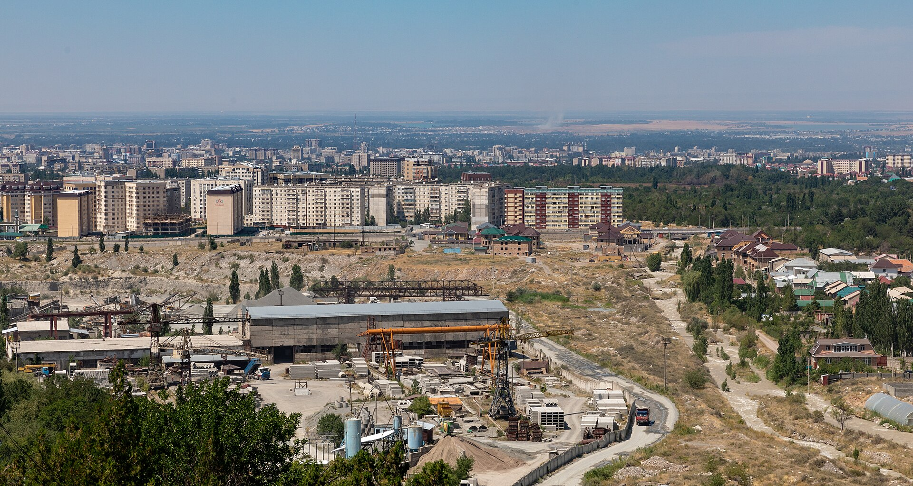

Ko‘chmanchilar o‘yinlari yakunlandi: ommaviylik tashkiliy kamchiliklarni ochib berdi
6-sentabrda yopilgan VI Jahon ko‘chmanchilar o‘yinlarida transport, sanitariya va chiptalar bilan bog‘liq muammolar qayd etildi. Kokpar finalida 7 000 chipta sotilgan, 2 500 tasi haqiqiy emas deb topilgan.

VI Jahon ko‘chmanchilar o‘yinlari 2026-yil 6-sentabr kuni Qirg‘izistonda yakunlandi. Bir hafta davomida ot sporti, milliy kurash turlari, musiqa va hunarmandchilik dasturi namoyish etildi. Tadbir jamoatchilik e’tiborini tortdi, biroq uning ommaviyligi tashkiliy tayyorgarlikdagi bo‘shliqlarni ham ko‘rsatdi.
Ochilish marosimi
Ochilish marosimi yangi “Bishkek Arena” stadionida o‘tkazildi. Stadion sig‘imi 51 000 dan ortiq bo‘lsa-da, marosimga taxminan 30 000 tomoshabin keldi. Sabab sifatida chipta narxlari (5 000–9 000 som) va kirish nazoratining qattiqligi ko‘rsatildi.
Qirchin vodiysidagi etno-festival maydonida tashkilotchilar dastlabki ikki kun ichida taxminan 150 000 tashrif qayd etilganini ma’lum qildi. Bu raqam mustaqil ravishda tasdiqlanmagan va takroriy tashriflarni ham o‘z ichiga olishi mumkin.
Transport
Tashrifchilar shattl avtobuslarini kutish ikki soatgacha cho‘zilganini bildirdi. Ayrim chet ellik mehmonlar avtobusga chiqa olmagach, tashrifdan voz kechdi. Tashkilotchilar hafta o‘rtasida qo‘shimcha 40 ta avtobus chiqardi — bu dastlabki hisob-kitob yetarli bo‘lmaganini ko‘rsatadi.
Chiptalar bilan bog‘liq holat
Eng ko‘p muhokama qilingan epizod kokpar musobaqasi finalida yuz berdi. Jami 7 000 ta chipta sotilgan; keyinchalik rasmiylar 4 500 tasi haqiqiy, 2 500 tasi esa yaroqsiz bo‘lganini tan oldi. Natijada pul to‘lagan bir qism tomoshabinlar maydonga kirita olinmadi.
Tashkilotchilar zarar ko‘rganlarga 1 000 som miqdorida qaytarish taklif qildi, biroq qaytarish jarayonining yakuniy ko‘rsatkichlari e’lon qilinmadi.
- Yopilish sanasi: 6-sentabr, 2026
- Ochilish marosimi tomoshabinlari: ~30 000 (sig‘im 51 000+)
- Chipta narxi: 5 000–9 000 som
- Qo‘shimcha chiqarilgan avtobuslar: 40 ta
- Kokpar finalida sotilgan chiptalar: 7 000; haqiqiy — 4 500
Musobaqalar bo‘yicha e’tirozlar
Afg‘oniston jamoasi kokpar musobaqasidan chiqdi; sabab sifatida otlar bilan ta’minlash yetarli emasligi ko‘rsatildi. Qozog‘iston jamoasi sardori arena qoplamasining sifati va darvoza doirasining ko‘rinishi bo‘yicha e’tiroz bildirdi.
Medallar jadvali bilan bog‘liq chalkashlik ham qayd etildi: natijalar e’lon qilindi, keyin olib tashlandi va qayta joylandi. Yakuniy tuzatishlar musobaqa yopilgandan keyin kiritildi.
Sanitariya va infratuzilma
Tashrifchilar asosiy maydonlarda hojatxonalar va ichimlik suvi nuqtalari yetishmasligini qayd etdi. Bunday muammolar ochiq havodagi ko‘p kunlik tadbirlar uchun odatiy tanqid mavzusi hisoblanadi va odatda kutilgan tashrifchilar sonining noto‘g‘ri baholanishi bilan bog‘lanadi.
Umumiy manzara
O‘yinlar 113 davlatdan 3 000 ga yaqin sportchini to‘pladi va Markaziy Osiyoning eng yirik madaniy-sport tadbirlaridan biri bo‘ldi. Medallar bo‘yicha Qozog‘iston yetakchilik qildi.
Kuzatuvchilar yakuniy baholashda ikki jihatni ajratadi: madaniy dastur va tomoshabinlar qiziqishi yuqori darajada bo‘ldi; boshqaruv, logistika va sport ma’muriyati esa shu miqyosga tayyor emasligini ko‘rsatdi.
Keyingi bosqich
Jahon ko‘chmanchilar o‘yinlari nima
Jahon ko‘chmanchilar o‘yinlari — ko‘chmanchi xalqlarning an’anaviy sport turlari bo‘yicha xalqaro musobaqa. U birinchi marta 2014-yilda Qirg‘izistonda o‘tkazilgan va shundan beri turli davlatlarda navbatma-navbat tashkil etiladi.
Dastur tarkibiga ot sporti turlari, milliy kurash uslublari, kamondan otish, ovchilik an’analari va aqliy o‘yinlar kiradi. Sport qismi bilan bir qatorda etno-madaniy festival ham o‘tkaziladi.
2026-yilgi oltinchi o‘yinlarda 113 davlatdan 3 000 ga yaqin sportchi qatnashdi. Medallar bo‘yicha Qozog‘iston yetakchilik qildi.
Kokpar va boshqa turlar
Eng ko‘p tomoshabin to‘playdigan tur — kokpar (Qirg‘izistonda ko‘k-bo‘ri deb ataladi). Bu otliq jamoaviy o‘yin bo‘lib, unda ishtirokchilar og‘ir yukni raqib darvozasiga tashlashga harakat qiladi.
O‘yin yuqori jismoniy talab qo‘yadi va otlarning holatiga bevosita bog‘liq. Afg‘oniston jamoasining musobaqadan chiqishi sababi ham otlar bilan ta’minlash yetarli emasligi ko‘rsatildi.
Qozog‘iston jamoasi sardori arena qoplamasining sifati va darvoza doirasining ko‘rinishi bo‘yicha e’tiroz bildirdi — bu sport ma’muriyati bilan bog‘liq kamchiliklarga ishora qiladi.
Yirik tadbirlarda tipik muammolar
Ko‘p kunlik ommaviy tadbirlarda uchraydigan muammolar odatda bir xil ro‘yxatdan iborat bo‘ladi: transport quvvati, sanitariya nuqtalari soni, ichimlik suvi, chipta nazorati va navbatlarni boshqarish.
Ularning aksariyati kutilgan tashrifchilar sonini noto‘g‘ri baholash bilan bog‘liq. Qirchin vodiysidagi festival maydonida dastlabki ikki kunda taxminan 150 000 tashrif qayd etilgani e’lon qilindi — bu raqam mustaqil tekshirilmagan va takroriy tashriflarni ham qamrab olishi mumkin.
Chiptalar tizimi
Kokpar finalida yuzaga kelgan holat chipta nazorati tizimidagi kamchilikni ko‘rsatdi: sotilgan 7 000 chiptaning 2 500 tasi yaroqsiz deb topildi. Bu odatda soxta chiptalar yoki nazorat tizimidagi texnik nosozlik bilan izohlanadi.
Tashkilotchilar zarar ko‘rganlarga 1 000 som miqdorida qaytarish taklif qildi. Qaytarish jarayonining yakuniy ko‘rsatkichlari e’lon qilinmadi.
Iqtisodiy va imij samarasi
Bunday tadbirlar odatda ikki maqsadni ko‘zlaydi: ichki turizmni rag‘batlantirish va mamlakatning xalqaro tanilishini oshirish. Ularning bevosita iqtisodiy samarasi odatda bilvosita samaradan kichik bo‘ladi.
Qirg‘iziston uchun 2026-yil iqtisodiy jihatdan faol bo‘ldi: yetti oyda o‘sish 11,1 foizni tashkil etdi. Sentabr oyida mamlakat bir nechta yirik investitsiya kelishuvini e’lon qildi.
Keyingi o‘yinlar
Keyingi o‘yinlar o‘tkaziladigan davlat va sana bo‘yicha rasmiy qaror alohida e’lon qilinishi kutilmoqda. Tashkilotchilik tajribasi bo‘yicha xulosalar odatda keyingi mezbon uchun tavsiya shaklida rasmiylashtiriladi.
Bishkek Arena
Ochilish marosimi o‘tkazilgan “Bishkek Arena” — poytaxtdagi yangi ko‘p funksiyali sport majmuasi. Uning sig‘imi 51 000 dan ortiq tomoshabinni tashkil etadi va u mamlakatdagi eng yirik stadion hisoblanadi.
Marosimga taxminan 30 000 tomoshabin keldi, ya’ni stadion to‘liq to‘lmadi. Sabab sifatida chipta narxlari va kirish nazoratining qattiqligi ko‘rsatildi.
5 000–9 000 somlik chipta narxi mamlakatdagi o‘rtacha daromadga nisbatan sezilarli summa hisoblanadi; bu mahalliy tomoshabinlar uchun kirish to‘sig‘ini yaratgan omillardan biri bo‘lishi mumkin.
Qirchin vodiysi
Etno-festival o‘tkaziladigan Qirchin vodiysi Issiqko‘l viloyatida joylashgan. Bu yerda an’anaviy o‘tovlar tiklanadi, hunarmandchilik namoyishlari va milliy taomlar taqdim etiladi.
Vodiy shahar infratuzilmasidan uzoqda joylashgan, shu sababli transport, suv va sanitariya masalalari tashkilotchilar zimmasiga to‘liq tushadi.
Media va qiziqish
O‘yinlar xalqaro ommaviy axborot vositalarida keng yoritildi. Tadbirning vizual tomoni — ot sporti, milliy liboslar va tog‘ manzaralari — uni ijtimoiy tarmoqlar uchun jozibador qilgan omillardan biri bo‘ldi.
Shu bilan birga, tashkiliy kamchiliklar haqidagi xabarlar ham keng tarqaldi. Kuzatuvchilar yakuniy baholashda madaniy dastur va tomoshabinlar qiziqishi yuqori bo‘lganini, boshqaruv va logistika esa shu miqyosga tayyor emasligini qayd etdi.
Jahon ko‘chmanchilar o‘yinlari 2014-yildan beri o‘tkaziladi va turli davlatlarda navbatma-navbat tashkil etiladi. Keyingi o‘yinlar o‘tkaziladigan davlat va sana bo‘yicha rasmiy qaror alohida e’lon qilinishi kutilmoqda.